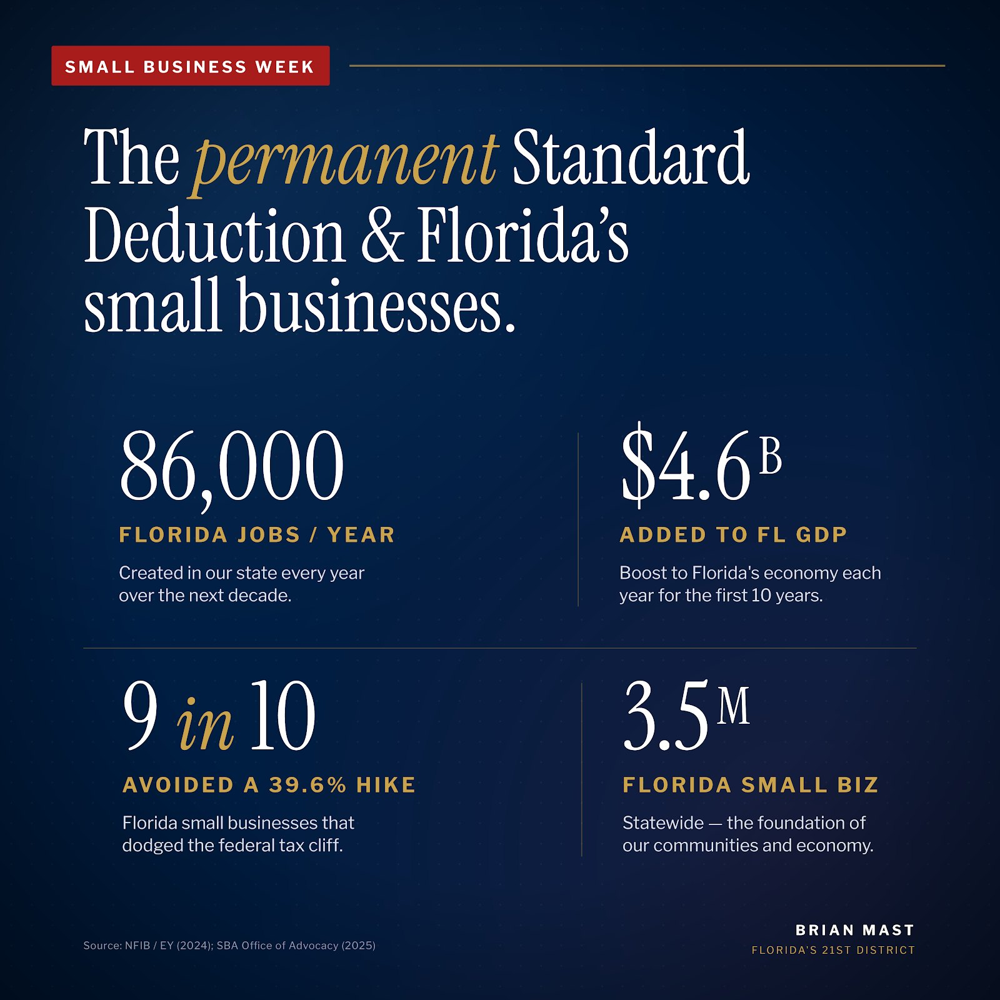
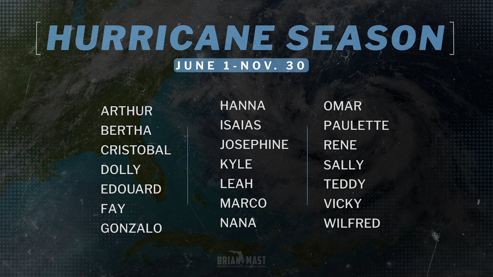

Congressman Brian MastFlorida's 21st District

Rep. Brian Mast Mission Continues
Digital communications and press at the U.S. House of Representatives
Rep. Brian Mast Mission Continues

Rep. Brian Mast We're Looking for the Best

Rep. Brian Mast Medal of Sacrifice

Rep. Brian Mast $529B: Most-Favored-Nation Pricing

Rep. Brian Mast Average Refund by County

Rep. Brian Mast Prescription Drug Prices

Rep. Brian Mast Small Business Week

Rep. Brian Mast Clean Water Is Our Economy

Rep. Brian Mast One Year Ago Today

Rep. Brian Mast Protect the Treasure Coast

Rep. Brian Mast Patriots' Day

Rep. Brian Mast VE Day

Rep. Brian Mast FUNDED: St. Lucie River Bridge

Rep. Brian Mast North Causeway Bridge Closures

Rep. Brian Mast Hurricane Season
Designed on the office's visual system in Illustrator, Photoshop and Canva.
Run the newsletter and outreach program end to end: writing, design, list strategy and scheduling, from the weekly newsletter to same-day issue alerts.
Script and produce the Congressman's weekly Week in Review, plus event photo and video, for YouTube and the e-list with a companion blog.
Daily posting across X, Instagram, Facebook and YouTube: content calendar, real-time coverage and community engagement, with a rapid-response operation run off a live monitoring tracker.
Led the redesign and migration to WordPress from scoping through launch. I wrote the requirements for the vendor work order, designed the interior page system, briefed the chief of staff and shipped the new site.
The Congressman's scripts, speeches, press releases, blogs, op-eds and talking points, from a Miami Herald op-ed to his International Mine Awareness Day and commencement remarks. Coordinated the America's Everglades Summit at the Capitol Visitor Center.
Built the office's first visual identity system and codified it as a reusable kit, now applied to every public product from newsletters to video.
Built and shipped a live public-safety tool for a coastal district, pulling real-time National Weather Service data onto the office website.
“The best digital staffer I've had the pleasure of working with.”Nominator, Capitol CNCT Top 10 Digital Staffers of Capitol Hill, 2026
Need a communicator who can also build it? Let's talk.